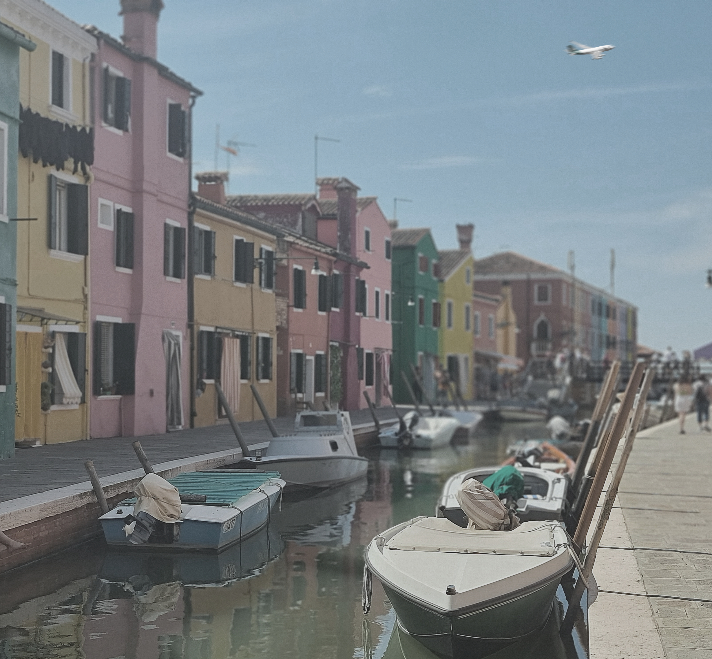
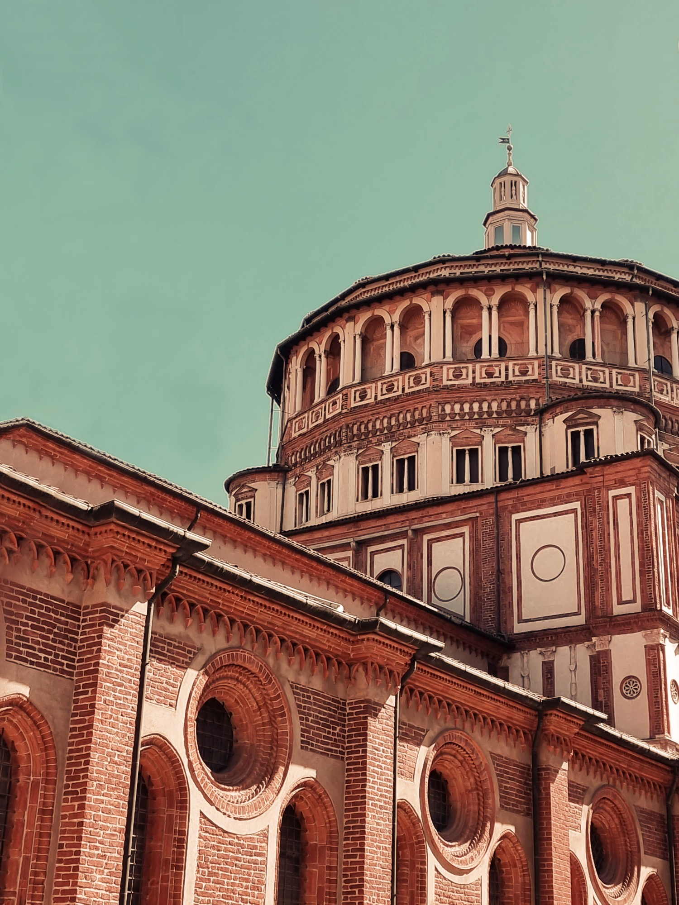
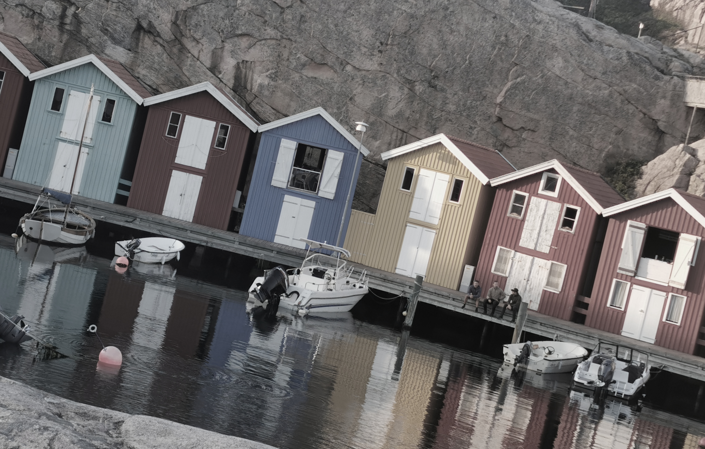
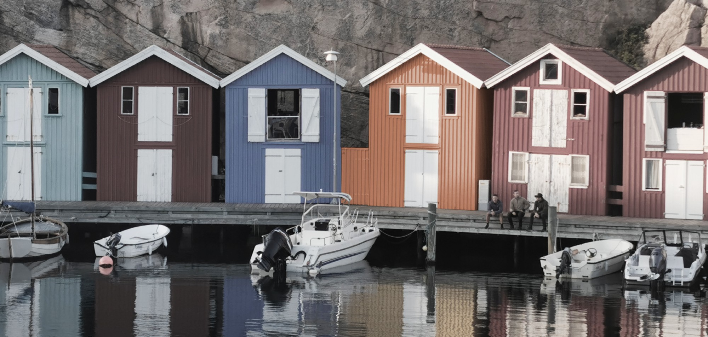

Bildredigering
Här presenterar jag tre fotografier som jag har bearbetat i Photopea. Genom att jämföra originalbilderna med de redigerade versionerna går det att se hur färg, ljus och andra förändringar påverkar resultatet.
1. Färger vid kanalen


Vad har förändrats?
I det första fotografiet har jag arbetat med färgbalans, exponering och kontrast. Målet var att framhäva byggnadernas färger och samtidigt behålla ett naturligt utseende.
Jag har även justerat bildens nivåer för att skapa en bättre balans mellan ljusa och mörka områden. Resultatet är ett fotografi med tydligare färger och ett mer balanserat ljus.
2. Historisk arkitektur


Vad har förändrats?
I originalbilden syns ett finger i det övre vänstra hörnet, vilket stör motivet och skymmer en del av byggnaden.
Jag har tagit bort fingret och återskapat den del av taket som var skymd. Därefter har jag justerat färger, ljus och kontrast för att framhäva byggnadens varma toner och detaljer.
Det viktigaste arbetet med denna bild var att få den återskapade delen att smälta in naturligt i resten av fotografiet.
3. Sjöbodar vid vattnet


Vad har förändrats?
Det tredje fotografiet har rätats upp och beskurits för att skapa en bättre komposition. Jag har även justerat ljus, kontrast och färger för att ge bilden ett tydligare uttryck.
En av sjöbodarna, som ursprungligen hade en beige och gulaktig färg, har ändrats till en varm terrakottaton. För detta använde jag en markering och justering av nyans och mättnad.
Färgändringen har begränsats till den utvalda byggnaden för att övriga delar av fotografiet ska behålla sina ursprungliga färger.
Sammanfattning av arbetet
Genom laborationen har jag fått öva på flera grundläggande tekniker inom digital bildbehandling. Jag har arbetat med färgkorrigering, exponering, kontrast, beskärning, objektborttagning och selektiv färgförändring.
Samtliga redigerade fotografier har exporterats i JPEG-format och anpassats för användning på webben.
Tillbaka till bildgalleriet